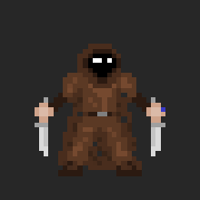
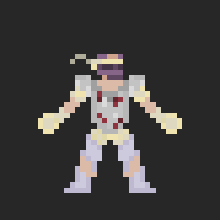
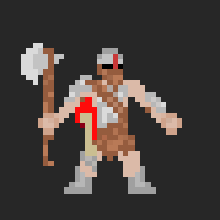
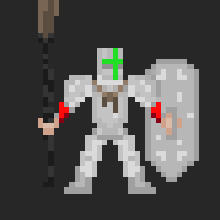
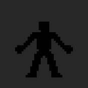

[WIP] Rogue-likebot 1980 Hall of Fame
Last Updated 17/04/2019
Summary
This section of the website is dedicated to the past Runs of the bot and the Explorers that featured in them. You can also click on the image of an Explorer to see additional details about them.
| v1.0 Runs | |||
|---|---|---|---|
| Paladin Samath the Legendary | Rogue Ra-thor the Mystical | ||
| v1.1 Runs | |||
| Brawler Karradin the Courageous | Rogue Samath the Gallant | Warrior Spoot the Hero | Brawler Ben Shapiro the Noble |
| Hunter Ziggy the Legendary | Hunter GarkovBot the Intrepid | Warrior Gary the Undaunted | Lancer Ben Shapiro the Fearless |
| Paladin Spoot The Strange | Rogue Spoot the Gutsy | Hunter The Prestigeous Potato the Grand | Hunter Paintmin the Noble |
| Warrior Gary the Gutsy | Lancer Lv.10 Hitman the Legendary | Brawler Ben Shapiro the Epic | Lancer The Prestigeous Potato the Brave |
| Rogue Paintmin the Undaunted | |||
| v1.2 Runs | |||
| Warrior Ben Shapiro the Legendary | Paladin Helm the Noble | Rogue Andi the Strange | Hunter Oreoreo the Epic |
| Paladin Ziggy the Gallant | |||
| v1.3 Runs | |||